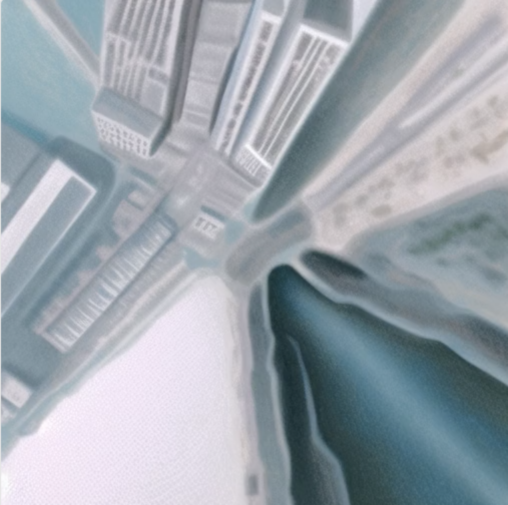
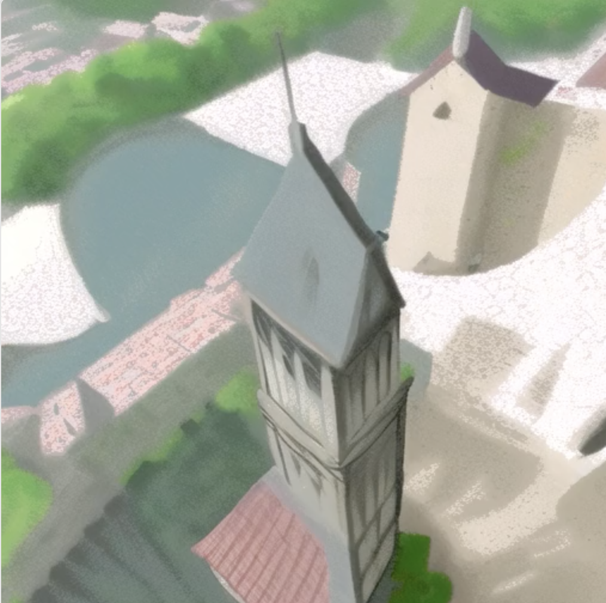
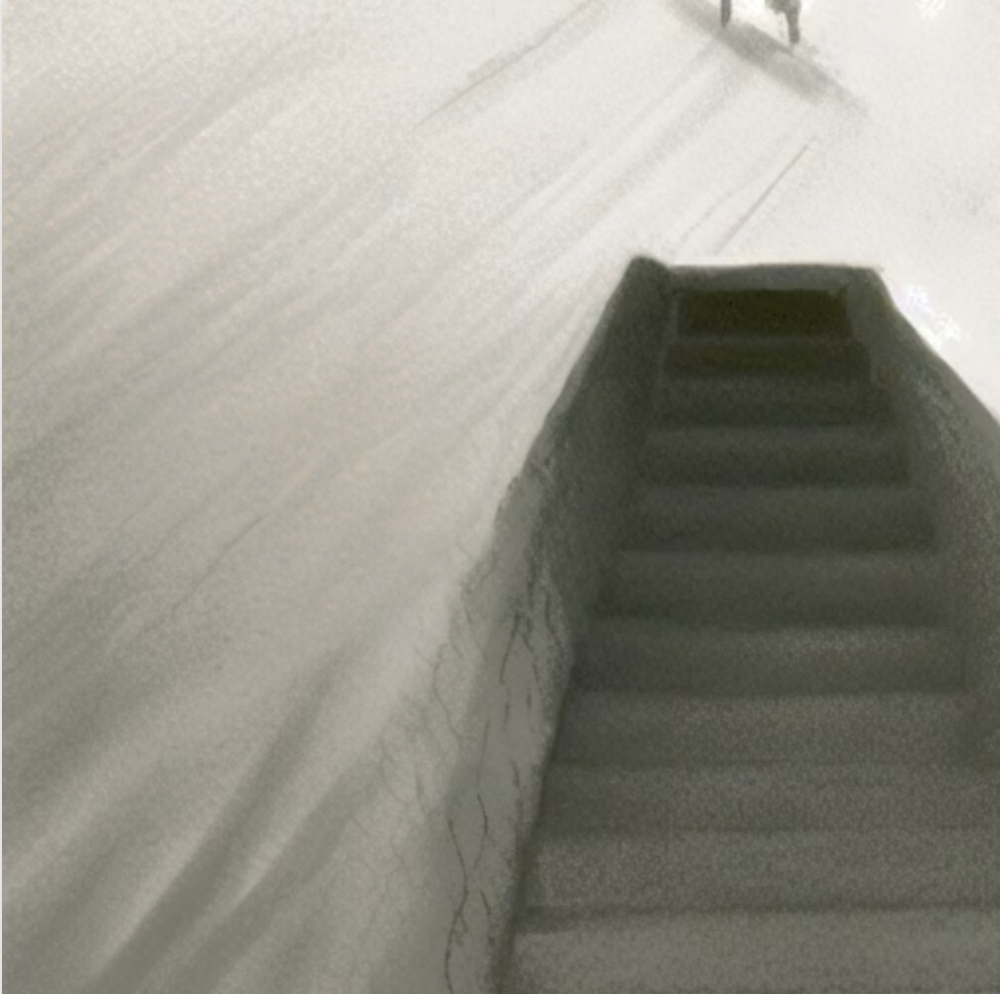
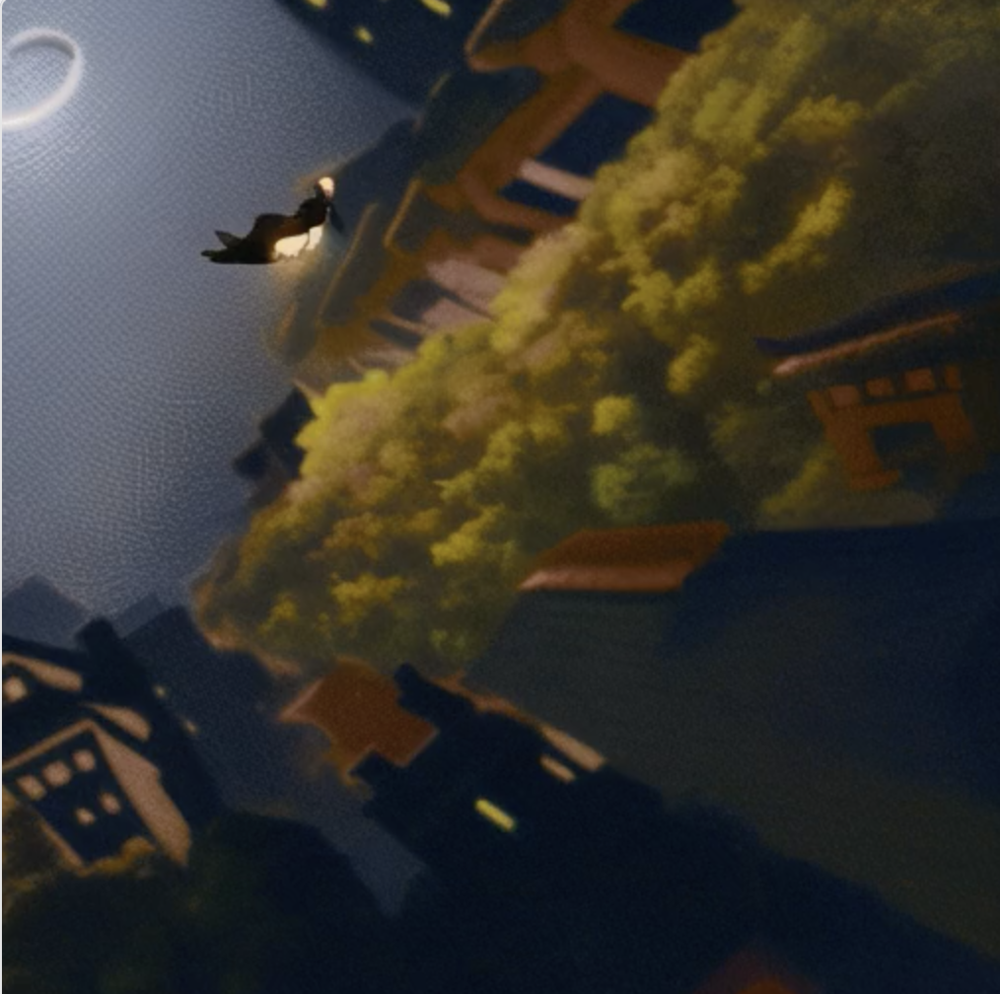

Diving Into The Unknown
Diving Into The Unknown
Research-based Art Practice
Beyond Human Spaces
CMC Art Gallery, City University of Hong Kong
2023
As humans, we fear falling, the weightlessness of it, because we feel a lack of control, a lack of knowledge. These subconscious fears of high places and falling from them are often manifest in dreams. The frequently recurring falling dream is a reflection of anxieties and fears about negative outcomes, such as having to confront negative inner emotions or a fear of failure . The act of falling inside dreams are often interpreted as symbols of losing control or facing uncertainties. To explore the narratives and symbolism of falling dreams, and to gain an understanding of individuals' own sense of empowerment in relation to their real lives, we interviewed 15 individual participants who have recurring experience of falling in dreams. Then we created DIVING INTO THE UNKNOWN, an art project employing Artificial Intelligence Generated Content (AIGC) to create visual interpretations of falling dreams. This initiative is grounded in the interviews with individuals, enabling us to use their descriptions in the interviews and AIGC tools to bring their described real dream experiences into visual form.
Collaborated with Xiaoke Zeng, Kexue Fu and RAY LC
DIVING INTO THE UNKNOWN provides the audience an opportunity to engage with the sensation of falling experiences. Through the computer vision detection, the movements of visitors will be detected and can influence the speed of their fall, replicating the experience of losing gravity. This interactive display aims to reconnect people with the sensory aspects of their dream experiences, encouraging a reflective and interpretative engagement with these falling sensations. Furthermore, the work highlights the potential of generative AI in enabling individuals to express and reinterpret their dream memories in the form of symbolism.
Related publication: Falling Echoes: Expressing the Act of Falling in Dreams Through Generative AI (ISEA 2024)



